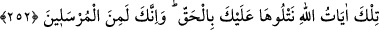

252. İşte bunlar Allah’ın âyetleridir. Biz onları sana doğru olarak anlatıyoruz.
Şüphesiz sen, Allah tarafından gönderilmiş peygamberlerdensin.
Buradaki “Allah’ın âyetleri”nden maksad, binlerce kişilik gruplar hâlinde ölüm
korkusundan dolayı memleketlerini terkedenlerin durumu, Tâlût’un hükümdar kılınması,
Tâbût’un gelişi, cebbar ve zâlim olanların yenilgiye uğraması ve Dâvud’un Câlût’u
öldürmesi hakkındaki anlatılanlardır. İşte bunlar Allah katından inmiş âyetlerdir. Bunlar
ehl-i kitâb’ın ve târihi malûmâtı olan kimselerin hiç şüphe etmeyecekleri bir tarzda,
Cebrâîl (a.s.) vâsıtasıyla doğru olarak Hz. Peygamber (a.s.)’a okunmuştur. Onların
kitaplarında yazılı bulunan malûmâta muvâfıktır.
Sen de ey Muhammed, risâletimizi teblîğ, emir ve ahkâmımızı icrâ için ümmetlere
gönderilen peygamberlerden birisin. Eğer sen peygamber olmasaydın, başkalarından
dinleyip öğrenmeden bu âyetlerden haberdar olamazdın. Rasûlullah (s.a.)’in kat’î
surette peygamber olduğunun belirtilmesi kâfirlerin “Sen peygamber değilsin” şeklinde
iddiâlarını red içindir. Şâir der ki:
Ey şanlı peygamber Hz. Ahmed, her müşkili halleden sensin.
Bence senin kısaca özelliğin her efendinin efendisi olmandır.
Şeriatı açıklayan sensin, tarikatı îzâh eden de sensin.
Ey eşsiz sultan, hakikat de ancak sende zâhir olmuştur.
Zikri geçen âyetlerde şu işâretler olduğu söylenmiştir: Nefs-i emmâre Câlût’u ile
mücâhede eden kimse, rabbine dönüp: “Rabbimiz, nefsimizi tâatına sokup
mâsiyetlerden kaçınmamız için üzerimize sabır dök! Zorluk ve genişlik ânında, bolluk
ve darlıkta, ahkâm-ı kazânın hücûmu esnâsında sana karşı teslîmiyet gösterme
husûsunda ayaklarımızı sâbit kıl! Kâfirler gürûhuna karşı bize yardım et!” diye
yalvararak Allah’tan yardım talebinde bulunmalıdır. Yoksa nefs-i emmâre ile başka
türlü bir mücâhede etmek ve bunda başarılı olmak çok zordur.
Kâfirler, umûmî olarak bizim din düşmanlarımızdır. Nefs-i emmâre ise, vücûdumuzun
iki yanı arasında bulunan en azılı özel bir düşmandır. Bu düşmanlara karşı mücâdelede
muvaffak olmak için, yer ve göğün Rabbına içten gelerek ilticâ edilirse, duâya icâbet
dolayısıyla düşmanlara karşı zaferin tahakkuku umulur. Allah’ın izni ve nusratı ile
onları bozguna uğrattılar. Çünkü Allah vâdini tutan, kuluna yardım eden ve tek başına
nice orduları, grupları hezimete uğratandır.
Kalb Dâvud’u, nefs Câlût’unu öldürdü. Kalb Dâvud’u, dünyaya karşı hırs, âhırete
meyil ve hevâ ile nefse bağlılık taşlarını birer birer aldı. Sonra bu üçü, “Allah’tan
başkasına iltifât” olarak tek taş hâline dönüşünce kalb Dâvud’u onu teslîmiyet ve rızâ
sapanına koyarak nefis Câlût’una attı. Allah Teâlâ inâyet rüzgârını müsahhar kılarak